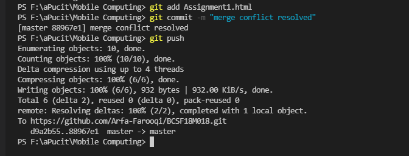

Github Account:
Create an account on github.com. Provide your username, password and email address.
Github Repository :
Create a new repository. Provide the details of repository on your account and then copy the url of that repository.

Clone a Repository :
Use the following command to clone a repository :
=> git clone "URL of the repository"

File Content :
Create a simple html file on loacal repository

Initialize New Repository :
This step is only needed one time while creating a new repository. We must initialize a new repository before adding any files.
Command to initialize a repository is as follows:
=> git init
Git Add :
There are two commands for this :
To add all the files of local repository :-
=> git add.
To add a particular file of local repository :-
=> git add File Name

Git Commit :
Git also provides a command to commit changes with comment so that they can be tracked easily.
Use the following command to commit :
=> git commit -m "your message"

Git Status :
Git status tells us about the status of the repository.
Command is as follows :
=> git status
Git Push :
This command is used to push the changes to the server. Changes made in local repository are pushed to the central repository.While using the first time in new repository, push requires a destintion of the depository. See the following figure for further clarification.
Command is as folows :
=> git push
For 1st time while ising push command :

After :
View of Repository After Push :
Content of File in Repository :
Git also keeps track of changes made in file.

Changes Made in Local Repository :

Adding New Commit :

View of Repository After Third Commit :

Edit File Online :
File can also be changed online from central repository

Git Pull :
This command is used to get changes from Github to Local Repository
Command is as follows :
=> git pull

Merge Conflicts :
Sometimes a situation occures that same file gets changed from local repository by one person and also from central repository (online) by another person while working in team. Now same file is being eddited. This creates an issue which is called Merge Conflict.
File Changed from Local Repository :

File Changed Online (from Central Repository) :
Git Add and Commit :
Now the Conflict occures.
If we push first then it will give an error message to pull first (see the following figure):
New Commit Added :
br>
It will ask to accept the current changes (changes made from local repository), incomming changes (changes mage from github) or both. After choosing one of them, the conflict will be resolved.
Resolved Merge Conflict :
Add, Commit and Push the file once again.
View of Central Repository :
Git Log
This command shows details of commits.
=> git log
Branching :
When you're working on a project, you're going to have a bunch of different features or ideas in progress at any given time, some of which are ready to go, and others which are not. Branching exists to help you manage this workflow. When you create a branch in your project, you're creating an environment where you can try out new ideas. Changes you make on a branch don't affect the main branch, so you're free to experiment and commit changes, safe in the knowledge that your branch won't be merged until it's ready to be reviewed by someone you're collaborating with.
Create a Branch :
To list down a branch, following command is used :
=> git branch
The git branch command lets you create, list, rename, and delete branches.
Use the following command to create a new branch:
=> git checkout -b newBranchName

Switch between master branch and newBranch :
Main Branch :
New Branch :
Github View :
Add a File to New Branch :
Merge Branches :
Delete Branch :
To delete a branch, following command is used :
=> git branch -D branchName
Roll No: BCSF18M018
Assignment # 1